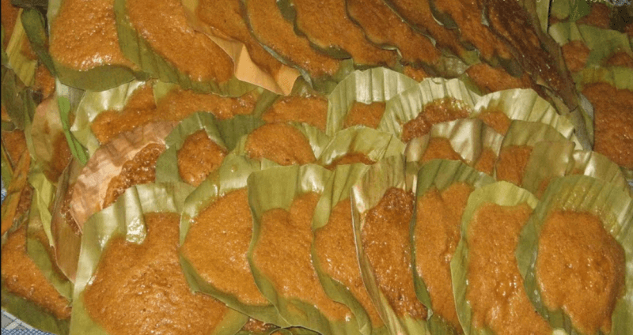
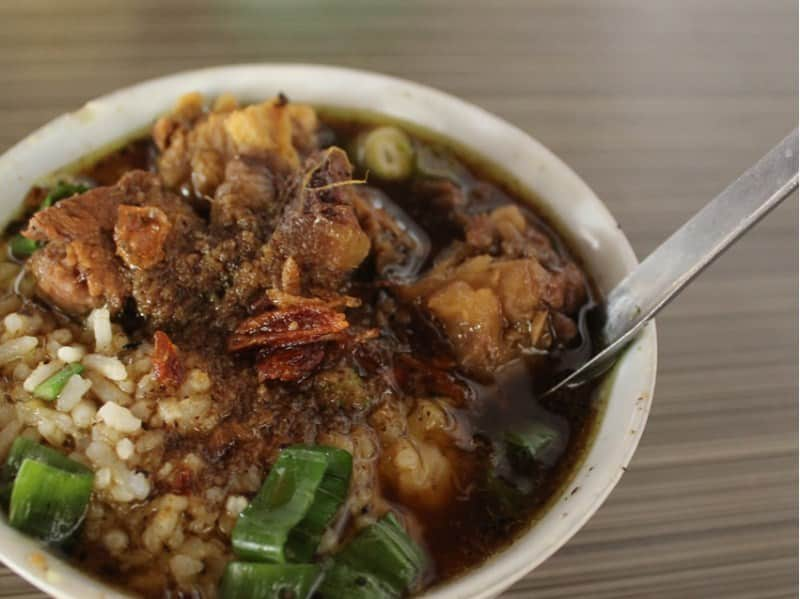
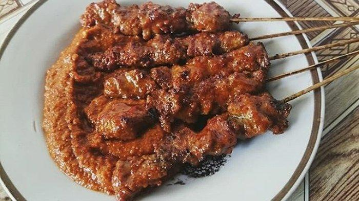
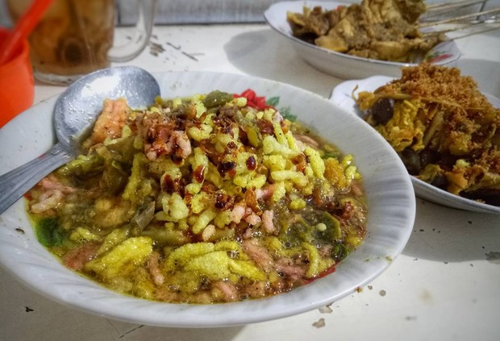
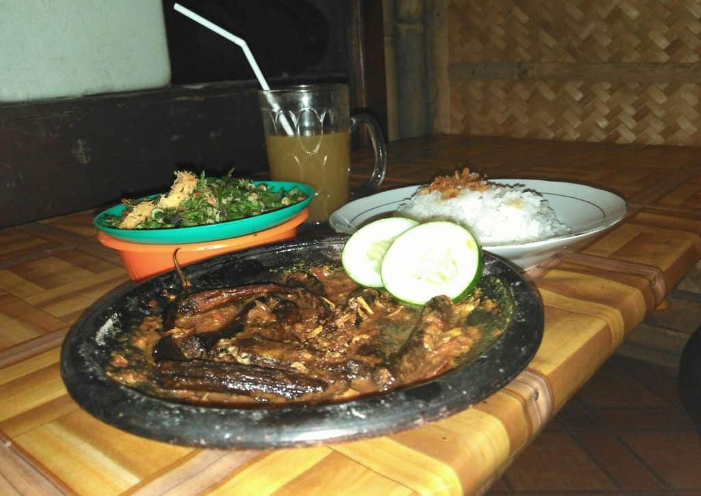
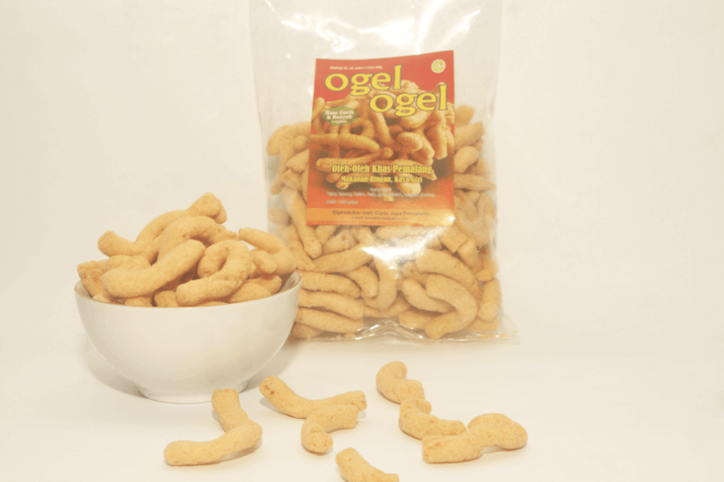

Kuliner di Pemalang
Rekomendasi Kuliner di Kab.Pemalang

Apem Comal
Apem comal Pemalang merupakan jajanan tradisional yang empuk dan manis. Kalau sedang mampir ke kota asalnya, jangan lupa cobain deh.
Kue ini banyak dijual di pasar Comal Pemalang. Sama seperti apem dari Jawa yaitu terbuat dari tepung beras dan gula jawa. Bedanya,
apem ini dilapisi alas daun pisang, rasanya sudah pasti legit.Harga apem Comal cukup murah, kok cuma seribuan aja perbiji. Apem comal
juga cocok jadi pilihan buat oleh-oleh nih. Sayangnya, apem Comal tidak menggunakan bahan pengawet atau santan, jadi hanya bisa tahan 24 jam.
Meski terkenal di daerah Comal Pemalang, ternyata aslinya berasal dari daerah Kesesi kabupaten Pekalongan. Karena lokasinya yang berdekatan,
jadi orang mengira kalau Apem Comal khas dari kabupaten Pemalang. Bahkan, kampung ini disebut kampung apem lho.

Grombyang
Nasi grombyang adalah sejenis nasi campur yang merupakan makanan khas dari masyarakat Pemalang, Jawa Tengah.
Nama makanan ini berasal dari bentuk penyajiannya, yaitu antara isi dan kuah lebih banyak kuahnya sehingga kelihatan bergoyang-goyang (bahasa Jawa:
grombyang-grombyang, artinya "bergoyang-goyang").Ramuan nasi grombyang terdiri dari nasi, irisan daging kerbau dan kuah, disajikan dalam mangkuk
kecil dan dilengkapi dengan sate kerbau. Ciri khas lainnya dari nasi grombyang terletak pada tempat jualannya yang berupa kuali besar, tempat nasi
ditutupi dengan kain merah, diserta penerangan remang-remang lampu templok. Pembeli menikmati hidangan dengan duduk di kursi kecil pendek (dingklik).

Sate Loso
Sate Loso merupakan kuliner khas Pemalang yang konon muncul karena sosok bernama Pak Loso yang berasal dari Weleri.
Resepnya turun-temurun ke warga Pemalang yang mencintai sate ini. Tak heran jika kini banyak sekali menjual sate ini di Pemalang.
Konon, garis keturunan Pak Loso yang memiliki resep paling asli adalah Sate Loso Pak Mul yang ada di Jalan Urip Sumoharjo dan RM Sate Loso Pah In.
Selain kedua kedai itu, adapun kawasan penjual sate khas Pemalang ini bisa ditemui di beberapa sudut Pemalang, yakni di Jalan RE Martadinata di sebelah utara alun-alun Pemalang.
Sate Loso sendiri berbahan utama daging kerbau atau daging sapi yang telah dibacem terlebih dahulu sebelum dibakar. Biasanya disajikan dengan bumbu kacang berwarna merah yang
telah diuleg lembut dengan rasa yang sangat khas karena menggunakan cabai merah sehingga menggairahkan ketika disajikan.

Lontong Dekem
Lontong Dekem, dari namanya saja cukup menarik. Secara harafiah makanan ini merupakan kombinasi antara lontong dan dekem, lontong makanan dari beras yang dibuat lonjong dibungkus daun pisang dan dekem (bahasa jawa) menunjukkan posisi duduk,
di mana tempat duduk sama kaki hampir sama sehingga kakinya tertekuk. Jadi Lontong Dekem dapat diartikan menikmati lontong sambil duduk ndekem. Ada juga yang berpendapat karena yang jualan duduknya yang dekem.
Sedikit sejarah, Lontong Dekem dikenal mulai tahun sembilan puluhan. Nama Lontong Dekem diambil dari cara pengolahannya, yaitu sebelum disajikan lontong disiram dengan kuah santan lalu ditumpahkan lagi kemudian disiram
lagi lalu ditumpahkan lagi begitu seterusnya hingga beberapa kali siraman sehingga lontong menjadi terendam. Istilah terendam dalam bahasa Pemalang adalah dekem, sehingga makanan tersebut dinamakan Lontong Dekem.
Racikan Lontong Dekem terdiri dari irisan lontong, kuah santan berwarna kuning seperti gulai, serta ditaburi serundeng kelapa, kerupuk dan bawang goreng. Lontong Dekem biasa disajikan bersama sate. Hidangan Lontong Dekem selalu identik dengan sate yang menyertainya.
Warung Lontong Dekem biasanya menyediakan dua jenis sate ayam yaitu sate goreng dan berkuah. Sate goreng bersifat kering dan ditusuk dengan tusuk sate sementara sate berkuah adalah sate goreng yang disajikan bersama kuah santan dan ditaburi serundeng kelapa.

Pecak Belut
Belut menjadi salah satu kuliner khas di seputaran Pantura, khususnya di Kabupaten Pemalang. Selain memang banyak mengandung protein belut juga menjadi sajian kuliner yang nikmat dan gurih, pastinya bisa memanjakan lidah kalian yang suka berburu kuliner.
Pecak belut ini menjadi kuliner legendaris dari Pemalang. Sudah puluhan tahun kuliner ini tersaji di sini. Ciri khas dari kuliner Pemalang yang satu ini adalah belut yang disajikan dengan sambal santan atau biasa disebut dengan pecak belut sambal santan.
Desa Tegalmlati menjadi salah satu sentra kuliner khas Pemalang dengan bahan dasar belut. Di sini berderet warung yang menjajakan menu andalan berupa pecak belut. Lokasinya tidak jauh dari jalur Pantura Pemalang. Hanya dibutuhkan waktu beberapa menit saja
kalian sudah bisa memilih mau makan pecak belut di warung yang mana.Pecak belut disajikan dalam wadah loyang berukuran sedang. Biasanya satu loyang berisi 1-2 ekor belut tergantung dari ukuran belutnya. Pilihannya pun bisa berupa belut goreng, belut bakar atau belut panggang.
Untuk sambalnya kita bisa memilih bisa sambal tomat, sambal terasi atau yang menjadi andalan berupa sambal santan. Santannya sendiri santan fresh jadi rasanya tetap terjaga.

Ogel-Ogel
Ogel-Ogel merupakan makanan khas Pemalang, dibuat dengan bahan dasar tepung beras ketan, dipadu dengan bahan lainnya yang terdiri dari gula, garam, keju dan dibentuk seperti ulat menggeliat dengan menggunakan alat khusus yang dibuat sendiri oleh pembuat jajanan ini.
Makanan ini diolah secara tradisional dengan proses digoreng menggunakan minyak goreng pilihan di dalam wajan besar sehingga mempunyai citarasa yang Gurih, Lezat dan Renyah. Pengolahan ogel-ogel dengan bahan baku dan bumbu pendukung sama sekali tidak menggunakan zat
pewarna bahkan 100% tanpa bahan pengawet, sangat cocok dikonsumsi sebagai camilan maupun sebagai pengganti kerupuk.Ogel-ogel sangat aman dikonsumsi sebagai camilan atau pengganti kerupuk. Bagi Anda yang suka pedas bisa menggunakan saus sambal. Makanan yang rasanya
gurih renyah ini diam-diam telah menyebar luas ke berbagai daerah maupun kota besar di Indonesia. Bahkan tak jarang dijadikan oleh-oleh ketika mengunjungi manca negara. Jika dilihat dari bentuknya, Ogel-Ogel berwarna putih kecoklatan atau krem panjangnya sekitar 2-3
sentimeter dengan ukuran sebesar jari kelingking orang dewasa. Salah satu ciri sebagai makanan khas, Ogel-Ogel dalam kemasan bisa bertahan hingga 3 bulan.